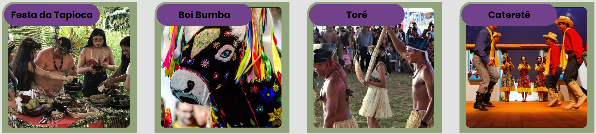
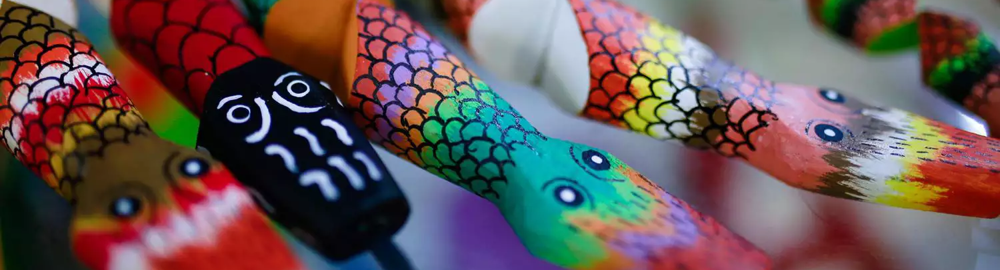

Comemoradas atualmente
Os povos indígenas Tupi-Guarani têm uma grande variedade de celebrações,
festas e datas comemorativas. Essas festividades são exemplos da importância
da cultura indígena na formação da identidade brasileira e são uma forte
manifestação cultural e representam uma forma de manter suas tradições vivas.

Comemorações extintas
Ao longo do tempo, diversas celebrações enraizadas na cultura indígena foram
gradualmente sendo excluídas, por variados fatores. Um exemplo de prática
cerimonial que não é mais realizada dentro do contexto cultural indígena atual
é a "Festa do Miriti" ou "Festa da Moça Nova". Esta comemoração ritualística
era realizada por algumas aldeias indígenas da região amazônica do Brasil. A
festividade marcava a transição das jovens para a fase adulta, simbolizando a
chegada de sua primeira menstruação e o reconhecimento de seu papel como mulheres
dentro da comunidade no geral. A preparação para a celebração era cuidadosamente
planejada com antecedência por toda a comunidade, frequentemente envolvendo a
construção de uma extensa maloca, uma edificação comunitária para abrigar os ritos
festivos.
Além disso, eram confeccionadas vestimentas e adereços tradicionais destinados às
participantes. As jovens que alcançavam a puberdade preenchiam seus corpos com
elaboradas pinturas, as quais frequentemente incorporavam desenhos simbólicos e
motivos culturais. Tinham também enfeites confeccionados a partir de materiais
naturais, como penas, sementes e conchas.
No contexto da celebração, eram executadas danças tradicionais pelas jovens e
membros da comunidade, sendo a música um componente fundamental dessa festividade.
Instrumentos de origem indígena, como flautas, maracás e tambores, eram utilizados
para criar ritmos e melodias concomitantemente aos rituais.

Lamentavelmente a Festa do Miriti não é mais amplamente observada em sua forma tradicional
nas comunidades indígenas da região amazônica do Brasil. Isso porque existem diversos
fatores que podem ter contribuído diretamente ou não para isso, como as mudanças culturais
pela crescente interação das comunidades com a sociedade não indígena, assim como
transformações sociais e culturais que podem conduzir ao abandono ou à alteração dessas
práticas ancestrais. A influência de missionários e a disseminação de religiões cristãs na
região da floresta amazônica também tiveram impacto nas práticas culturais e religiosas desses
povos, afetando a realização de rituais tradicionais e contribuindo para a perda de línguas e
conhecimentos ancestrais.

Outro traço ancestral da cultura indígena que infelizmente já não é mais celebrado é a “Dança do
Xingu”. Esta tradição vem das comunidades indígenas do Alto Xingu, situadas no estado
de Mato Grosso. No passado a Dança do Xingu constituía uma forma de expressar narrativas, mitos e
crenças das aldeias, desempenhando um papel extremamente importante de suma relevância na transmissão da identidade
cultural e na celebração de eventos e rituais da comunidade. Muitas danças rituais indígenas,
incluindo a Dança do Xingu, estão intimamente entrelaçadas com a natureza, frequentemente
celebrando a relação indígena com a terra, a fauna, a flora e os elementos naturais que são
essenciais na cultura e nas crenças dos indígenas.

Em algumas comunidades, a Dança do Xingu integrava-se aos rituais de passagem que marcavam a
transição dos jovens para a vida adulta, e fazia parte de festividades como a Festa da Nova Moça.
Muitos dos rituais contavam com danças, músicas e práticas espirituais, com o propósito de
iniciar os jovens na vida adulta e instruí-los quanto às suas responsabilidades dentro da comunidade.

É crucial recordar que a Dança do Xingu enfrentou desafios significativos para garantir sua continuidade.
Isso inclui mudanças culturais que ocorreram dentro das comunidades indígenas. Não obstante, a Dança do Xingu
representa um legado cultural de inestimável valor, destacando a conexão profunda dos povos indígenas com sua
terra e tradições. Sua narrativa ilustra a importância de preservar e celebrar as ricas heranças culturais dos
povos indígenas do Brasil, reconhecendo o papel crucial que essas práticas desempenham na promoção do
entendimento, respeito e apreço pelas culturas indígenas e pela diversidade cultural do país.
Casamento indígena
Os casamentos indígenas no Brasil apresentam uma diversidade variando consideravelmente de uma aldeia
para outra, devido às tradições culturais e cerimoniais únicas dos diferentes grupos étnicos indígenas.
Essas cerimônias, marcadas por rituais significativos, frequentemente se estendem por vários dias e
são conduzidas de acordo com os costumes específicos de cada povo, sob a supervisão de líderes
espirituais ou anciãos.
Os votos matrimoniais também variam como a cerimônia de cada comunidade. Em muitos casamentos indígenas,
os noivos fazem compromissos perante a comunidade e os espíritos da natureza. Esses compromissos podem
incluir promessas de apoio entre o casal, cuidado um com o outro e contribuição para o bem-estar da
comunidade como num todo.

Após a cerimônia, é comum a realização de festas e celebrações que englobam comida, música, dança e outras
formas de entretenimento. Essas festividades podem se estender por diversos dias, proporcionando um
ambiente de alegria e comunhão entre os membros da aldeia e os convidados.
Vale ressaltar que não existe um padrão universal para os votos matrimoniais em casamentos indígenas, uma
vez que diferentes grupos étnicos possuem suas próprias práticas e rituais específicos. No entanto, uma
troca de votos que podem ser proferidos durante um casamento em uma aldeia Tupi-Guarani é:

Noivo: "Eu, [nome], aceito [nome do cônjuge] como minha parceira de vida. Prometo respeitá-la e
cuidar de você, como nossos antepassados fizeram. Juntos, compartilharemos nossas alegrias e
tristezas, e enfrentaremos os desafios da vida. Prometo honrar nossa comunidade, nossos valores e
nossa conexão com a natureza. Estou comprometido em ser um bom companheiro e a construir uma vida
juntos baseada no amor, respeito e cuidado."

Noiva: "Eu, [nome], aceito [nome do cônjuge] como meu parceiro de vida. Prometo respeitá-lo e
cuidar de você, como nossos antepassados fizeram. Juntos, compartilharemos nossas alegrias e
tristezas, e enfrentaremos os desafios da vida. Prometo honrar nossa comunidade, nossos valores e
nossa conexão com a natureza. Estou comprometida em ser uma boa companheira e a construir uma vida
juntos baseada no amor, respeito e cuidado."
Esses votos exemplificam o compromisso mútuo, a consideração pela cultura e a valorização da natureza que
regem os casamentos indígenas, representando a riqueza das tradições e da espiritualidade desses povos.